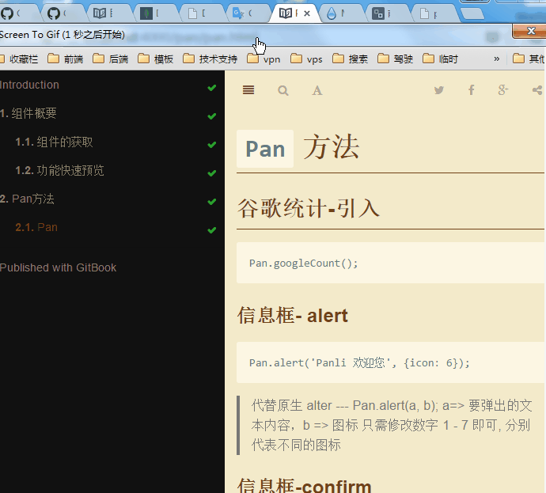

Panli 组件使用入门
这本是 PC (非移动设备) 端的 如果想查看 移动端的 请 点击这里
本书为初级难度，适合入门JavaScript语言基础的读者，用来了解这门语言的最新发展；也可当作参考手册，查寻新增的语法点。
本书制作
本书采用 gitbook 制作 由 Markdown 书写
阅读帮助
您可以使用 上下左右键来 享受阅读的体验
左右键分别是 上一篇 和 下一篇
阅读主题 分为 White(白色) ，Sepia(褐色) 和 Night(夜晚深色) 您还可以设置字体的大小调整 . 如下图
